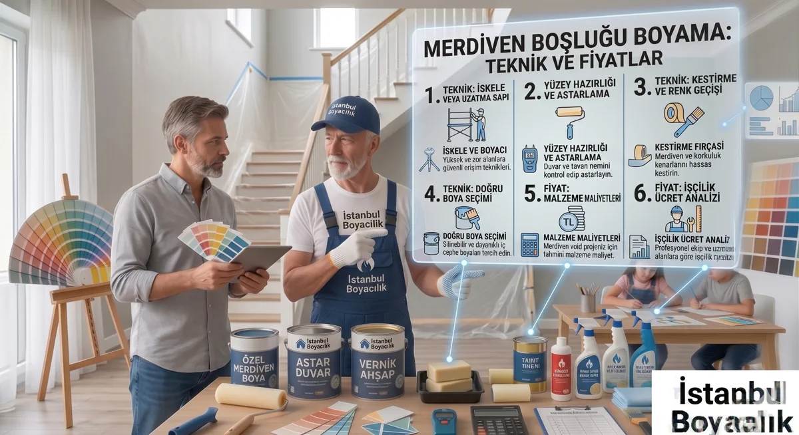

Merdiven boşlukları, apartman ve villa iç mekanlarında en çok ihmal edilen ancak en dikkat çeken alanlardan biridir. Yüksekliği nedeniyle özel ekipman gerektiren bu alanlar için doğru teknik ve uygulama rehberini aşağıda bulabilirsiniz.
Neden Zorlu Bir Alan?
Merdiven boşluklarının yüksekliği genellikle 4-8 metre arasında değişir. Standart merdiven yetmez; uzun saplı rulo veya seyyar platform gerekir. Boyacının hem güvenli hem de düzgün çalışabilmesi için bu ekipmanın doğru kurulumu kritiktir.
Kullanılan Ekipmanlar
- Seyyar çalışma platformu (iskele)
- 3-5 metre uzayan teleskopik rulo
- Özel açılı fırçalar (köşe ve profil çalışması için)
- Merdiven adaptörü (düzensiz basamak için)
Yüzey Hazırlığı
- Toz, nem ve yağ temizliği yapın
- Çatlak ve dökülmeler macunlanır
- Astar uygulaması (özellikle yeni alçı veya renk değişimi varsa)
- Boya: en az 2 kat, her kat arasında kuruma beklenecek
Yaklaşık Maliyet ve Etkileyen Unsurlar
| Alan Tipi | Tahmini Fiyat (işçilik+malzeme) | Not |
|---|---|---|
| 2-3 katlı standart merdiven boşluğu | 2.500-4.500 TL | Platform kurulumu dahil |
| 4-5 katlı apartman merdiveni | 4.500-8.000 TL | İskele kurulumu gerekebilir |
| Villa iç merdiven (özel dizayn) | 5.000-12.000 TL | Detaylı profil çalışması |
Sık Sorulan Sorular
Yüksek ve erişilmesi güç alanlar için platform veya özel merdiven kurulumu gerekir. Bu ekipman ve ek süre maliyeti yansıtır.
Güvenlik riski nedeniyle tavsiye edilmez. Yüksek alan çalışması özel ekipman ve deneyim gerektirir.
2026 itibarıyla standart merdiven boşluğu boyama 2.500-6.000 TL arasında değişebilir. Bina yüksekliği ve yüzey durumu fiyatı etkiler.
Bölgenize Göre Hizmet Alın
Net boya badana fiyatı için evinizin metrekaresini, oda sayısını ve bulunduğunuz ilçeyi WhatsApp ile gönderin; size hızlıca tahmini fiyat paylaşalım.
Fiyat Alın